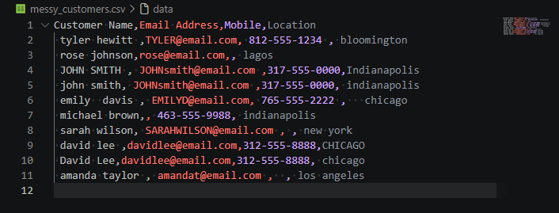
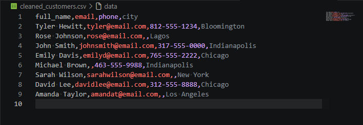

CSV cleanup and formatting
Clean exported CSV files so headers, rows, dates, categories, and values are easier to sort, filter, and review.
FlowForgeCo
I help businesses clean up CSV files, organize spreadsheets, convert PDF tables into Excel or Google Sheets, and simplify recurring data-heavy admin work with straightforward spreadsheet and Python support.
Services
Focused support for files that need to be cleaner, easier to review, and more usable for reporting, handoff, or recurring admin work.
Clean exported CSV files so headers, rows, dates, categories, and values are easier to sort, filter, and review.
Organize Excel and Google Sheets workbooks so the file is easier to read, maintain, and hand off.
Convert PDF tables into Excel or Google Sheets layouts that are easier to edit, report from, and reuse.
Standardize messy financial rows, categories, descriptions, and totals so reporting takes less manual work.
Use lightweight Python workflows when a file needs repeatable cleanup, transformation, or export prep.
Help simplify spreadsheet-heavy admin workflows that repeat every week, month, or reporting cycle.
Who I Help
Best suited for businesses that need practical cleanup and organization rather than a complicated technical setup.
Businesses working from exported reports, spreadsheets, and manual file cleanup that slows down day-to-day operations.
Teams managing customer lists, expense logs, trackers, and recurring reports that need cleaner structure.
Operations that still rely on Excel or Google Sheets and need better organization, formatting, and consistency.
Businesses dealing with PDF tables, copied report data, and manual conversions that need to move into usable spreadsheets.
Portfolio
Sample projects built around the same kinds of cleanup and organization problems businesses run into with spreadsheets, CSV exports, PDF tables, and recurring reporting work.
Sample Project
CSV Cleanup
Problem Raw customer records were inconsistent, duplicated, and harder to review than they should have been.
What I Did Standardized headers, cleaned formatting, corrected values, and removed duplicate entries.
Result A cleaner customer file that is easier to sort, review, and use for follow-up work.
Sample Project
CSV + Reporting
Problem Expense data was inconsistent across dates, categories, and row formatting, which made review slower.
What I Did Cleaned dates, categories, descriptions, and amounts, then generated a simple summary report.
Result A more structured expense file that is easier to filter, review, and use for reporting.
Demo Project
Excel Workbook
Problem Production-style tracking often starts in a basic sheet that is not organized for daily use.
What I Did Built an Excel tracker with clear headers, organized columns, and a simple status layout.
Result A workbook that is easier to update, scan, and hand off without extra cleanup.
Demo Workflow
Google Sheets
Problem Shared team sheets can become inconsistent when tracking work is updated manually over time.
What I Did Structured the sheet with clean headers and tracked rows for client, status, and priority review.
Result A clearer shared sheet that is easier to maintain for ongoing updates and follow-up.
Sample Project
Structured Data
Problem Inventory-style records were inconsistent and less useful for reporting or reuse.
What I Did Cleaned names and categories, converted prices to numbers, and preserved stock values.
Result A cleaner structured file that is easier to reuse in spreadsheets or downstream workflows.
Demo Workflow Proof
Screenshot-based proof from sample projects and demo workflows across Excel, Google Sheets, JSON cleanup, and summary reporting.


Before / After / Result
A simple example of how raw files can move from inconsistent source data to cleaner outputs and clearer reporting.


About
FlowForgeCo is focused on practical cleanup, organization, conversion, and spreadsheet support for teams working with exported reports, manual spreadsheets, and recurring admin-heavy files.
Get Help
Available for spreadsheet cleanup, CSV organization, PDF table conversion, transaction cleanup, and simple workflow support.
Contact
Available for spreadsheet cleanup, CSV formatting, PDF table conversion, Google Sheets help, and simple workflow support.